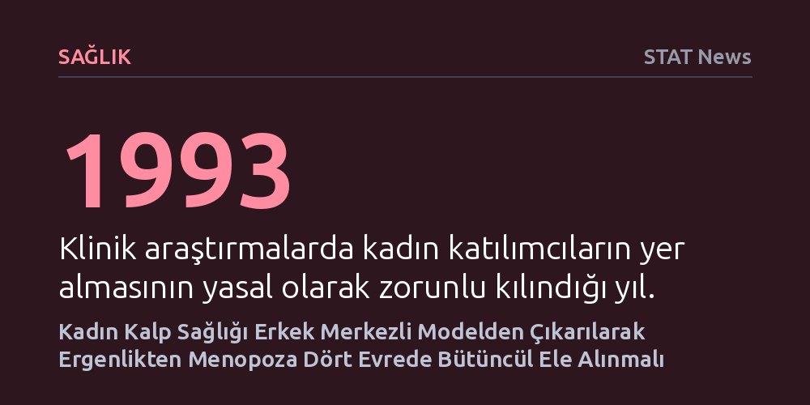

SAGLIK · STAT News · 2026-10-27
Dört büyük tıp derneği, kadınlarda kalp hastalığı riskini düşürmek için ergenlik, gebelik, perimenopoz ve menopozu birbirine bağlayan ortak bir klinik kılavuz yayımladı. Yeni yaklaşım, kadın biyolojisindeki hormonal geçişleri kalp ve metabolizma sağlığıyla birlikte yaşam boyu izlemeyi hedefliyor.
Kadın kalp sağlığının erkek odaklı tıp kalıplarıyla veya yalnızca ileri yaşta değil; ilk âdetten menopoza kadar uzanan hormonal evreler boyunca bir bütün olarak izlenmesi gerektiğini ortaya koyuyor.

Kadınlarda kalp ve damar hastalıkları dünya genelinde bir numaralı ölüm nedeni olmaya devam etmesine karşın, sağlık sistemi kadın kalbini uzun süre erkek biyolojisini temel alan modellerle değerlendirdi. Klinik deneylere kadın katılımcı dahil etme zorunluluğunun ancak 1993 yılında getirilmiş olması, kalp kası hücrelerindeki genetik farklılıklardan kalp krizinin belirti ve nedenlerine kadar pek çok özgüllüğün uzun yıllar göz ardı edilmesine yol açtı. Daha da kötüsü, kadınların sağlık takibi jinekoloji, doğum ve kardiyoloji gibi birbirinden kopuk uzmanlıklar arasında parçalanarak yaşam boyu bütüncül bir yaklaşımdan yoksun kaldı.
Bu kronik kopukluğu aşmak amacıyla Amerikan Kalp Derneği (AHA), Amerikan Pediatri Akademisi, Anne-Fetal Tıp Derneği ve Amerikan Kadın Hastalıkları ve Doğum Uzmanları Koleji (ACOG) ortak bir klinik çerçeve yayımladı. Circulation dergisinde üç kılavuz makale olarak yayımlanan bu çalışma, kadın kalp sağlığını yaşamın belirli bir dönemine ya da tek bir uzmanlık alanına sıkıştırmak yerine ergenlikten menopoz sonrasına uzanan kesintisiz bir takip sürecine oturtmayı amaçlıyor.
Yeni çerçeve, kadın biyolojisini erkek modellerinden ayıran temel faktörün hormon kaynaklı geçişler olduğunu vurguluyor. Takip süreci, ilk âdet dönemiyle (perimenarş) birlikte cinsiyetten bağımsız genel tıbbi yaklaşımlardan ayrılarak başlıyor. Bu dönemde genç kızlarda görülen aşırı âdet kanamaları demir eksikliğine ve fiziksel aktivite kısıtlılığına yol açabilmesinin yanı sıra, teşhisi genellikle yıllar süren poliendokrin metabolik over sendromunun ve gelecekteki kalp risklerinin ilk erken uyarı işareti olabiliyor.
Yaşam döngüsünün sonraki halkaları olan gebelik ve doğum sonrası dönemler ise tansiyon ve diyabet üzerinden uzun vadeli damar sağlığını doğrudan şekillendiriyor. Ancak kılavuzun özellikle üzerinde durduğu ve bağımsız bir evre olarak ele aldığı kritik dönüm noktası perimenopoz. Genellikle 45 ila 51 yaşları arasında yaşanan düzensiz döngüler ve hormonal dalgalanmalar, kolesterol değerlerinde ve metabolizmada belirgin değişimleri tetikliyor; bu evrede beliren risklerin erken tespiti kardiyovasküler hasarın önlenmesi adına en kritik fırsatı sunuyor.
Hormonal mekanizmalar yalnızca kalp ve damar sistemini değil, beyin kimyasını ve psikolojik dayanıklılığı da doğrudan yönlendiriyor. Ergenlik döneminde yükselişe geçen, gebelik ve doğum sonrasında belirginleşen kaygı ve depresyon, kalp sağlığından bağımsız işlemiyor. Zihinsel esenlik, hormonal dönüşümler ve damar fonksiyonları birbirini besleyen organik bir döngü oluşturduğundan, hastaların psikososyal durumlarının kardiyovasküler risk değerlendirmesine dahil edilmesi gerekiyor.
Tablonun bir diğer belirleyicisi ise beslenme bozuklukları ve toplumsal cinsiyet rolleriyle ilişkili yapısal zorluklar. Kadınların yoksulluk riskiyle daha sık karşılaşması, gelir adaletsizliği ve tek ebeveynlik sorumluluğu gibi sosyoekonomik baskılar kronik strese yol açarak kalp sağlığı üzerinde doğrudan yük oluşturuyor. Yeni model, tıpkı pediatrideki gelişim basamakları çizelgelerinde olduğu gibi, hekimlerin kadının hangi yaşam evresinde olduğunu ve bir sonraki adımda neyle karşılaşacağını öngören ortak bir dil benimsemesini öneriyor.
Kadın biyolojisine odaklanan bu kapsamlı yaklaşım, nihayetinde genel tıp pratiğinin her bireye özgü kurgulanmasını amaçlayan kişiselleştirilmiş tıp vizyonuna hizmet ediyor. Biyolojik cinsiyete bağlı farkların eksiksiz anlaşılması, erkek hastaların kardiyovasküler risk değerlendirmelerindeki eksikliklerin de daha net görülmesini sağlıyor.
Uzmanlar, hekimlerin kendi uzmanlık alanlarının dışına çıkarak "hepsi birbiriyle bağlantılı" yaklaşımıyla hastayı tüm yaşam öyküsü içinde değerlendirmesi gerektiğini vurguluyor. Farklı branşların aynı klinik kılavuz etrafında birleşmesi, kadınlarda bir numaralı ölüm sebebi olan kalp hastalıklarının vaktinde önlenebilmesi için temel bir zemin hazırlıyor.